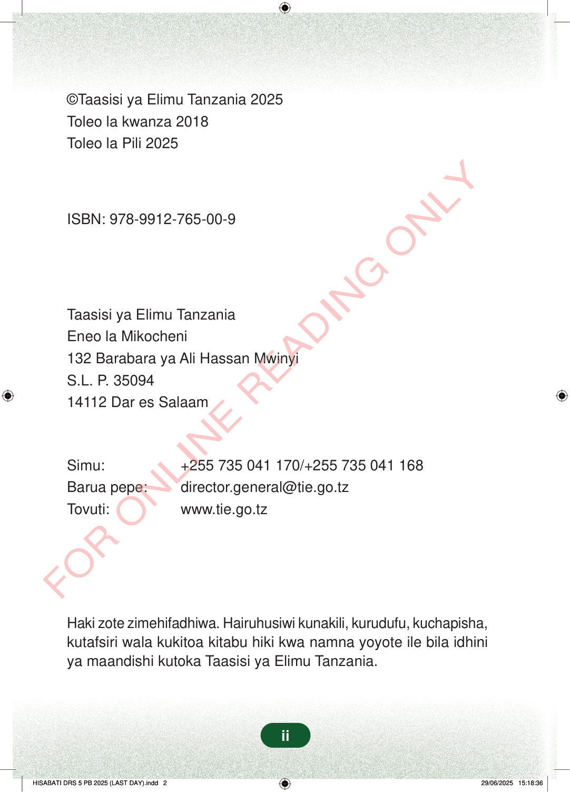

©Taasisi ya Elimu Tanzania 2025Toleo la kwanza 2018Toleo la Pili 2025ISBN: 978-9912-765-00-9Taasisi ya Elimu TanzaniaEneo la Mikocheni132 Barabara ya Ali Hassan MwinyiS.L. P. 3509414112 Dar es SalaamSimu:+255 735 041 170/+255 735 041 168Barua pepe:director.general@tie.go.tzTovuti:www.tie.go.tzHaki zote zimehifadhiwa. Hairuhusiwi kunakili, kurudufu, kuchapisha,kutafsiri wala kukitoa kitabu hiki kwa namna yoyote ile bila idhiniya maandishi kutoka Taasisi ya Elimu Tanzania.ii
©Taasisi ya Elimu Tanzania 2025 Toleo la kwanza 2018 Toleo la Pili 2025
ISBN: 978-9912-765-00-9
Taasisi ya Elimu Tanzania Eneo la Mikocheni 132 Barabara ya Ali Hassan Mwinyi S.L. P. 35094 14112 Dar es Salaam
Simu: +255 735 041 170/+255 735 041 168 Barua pepe: director.general@tie.go.tz Tovuti: www.tie.go.tz
Haki zote zimehifadhiwa. Hairuhusiwi kunakili, kurudufu, kuchapisha, kutafsiri wala kukitoa kitabu hiki kwa namna yoyote ile bila idhini ya maandishi kutoka Taasisi ya Elimu Tanzania.
ii
©Taasisi ya Elimu Tanzania 2025Toleo la kwanza 2018Toleo la Pili 2025ISBN: 978-9912-765-00-9Taasisi ya Elimu TanzaniaEneo la Mikocheni132 Barabara ya Ali Hassan MwinyiS.L. P. 3509414112 Dar es SalaamSimu: +255 735 041 170/+255 735 041 168Barua pepe: director.general@tie.go.tzTovuti: www.tie.go.tzHaki zote zimehifadhiwa.Hairuhusiwi kunakili, kurudufu, kuchapisha, kutafsiri wala kukitoa kitabu hiki kwa namna yoyote ile bila idhini ya maandishi kutoka Taasisi ya Elimu Tanzania.